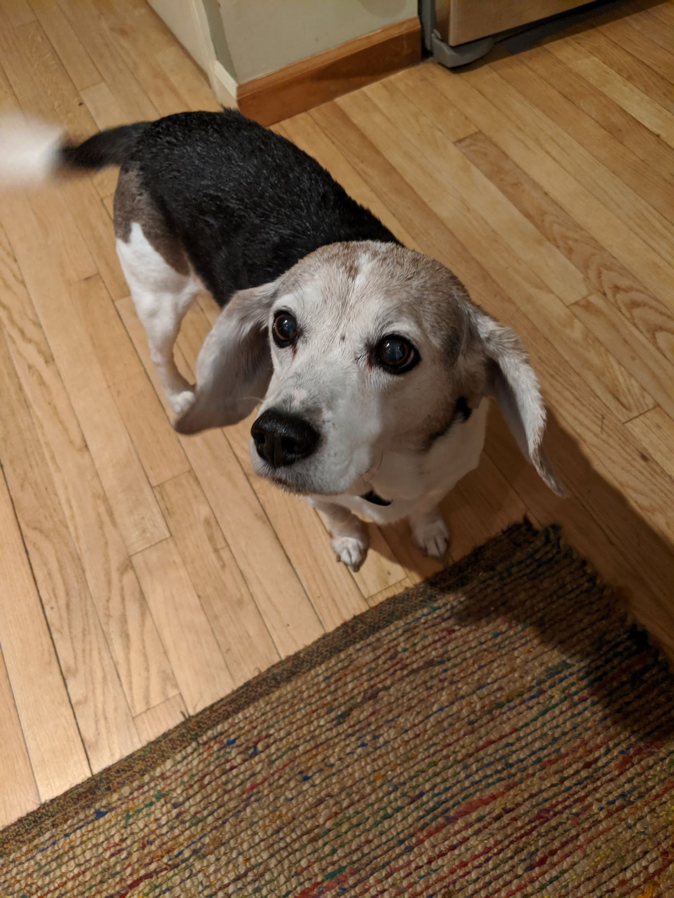

Beagles are a hunting breed normally used to hunt rabbits, and when I was younger my Human would me out to hunt woodland game birds like pheasants, quail, and woodcock; but now that I am an old man I get to just relax at home. Lola, the Human's new pet, is the one who goes out hunting with my Human now; I am ok with this though because all that walking really tires me out.
When I was a younger dog I was getting myself into sticky situations all the time. I remeber one time while out hunting I came across this very particular scent, so I followed it and followed it until I finally came across the animal. Then suddenly to my surprise a whole bunch of sharp spikes poked into my face! It was so sudden and painful I didn't even know what hit me! Thankfully my Human took me to the vet and they took all the spikes out of my nose, I later learned that this foul creature was known as a Porcupine. I will be sure to not mess with any more of those.